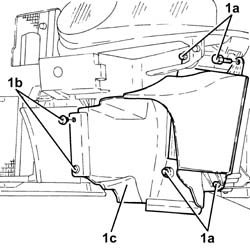

1048B48 HEAT EXCHANGER DUCT - R R
- Path
- Procedures > 10 ENGINE UNIT > 1048 ENGINE AIR SUPPLY CIRCUIT > 1048B PRESSURE AIR CIRCUIT > 1048B48 HEAT EXCHANGER DUCT - R R
- Kind
- repair procedure (removal / refitting; the operation number is the code)
- Applies to
- engines: 1.9 JTD 16V; all production periods
- Interactive page
- https://sloeber94.github.io/elrnDB-aGt/en/#/125001028
Applies to: engines: 1.9 JTD 16V; all production periods
 Removing
Removing
 Refitting
RefittingPosition the vehicle on the ramp
Proceed with removal
Op. 7055B54 UNDER-ENGINE GUARD - R R
Proceed with removal
1. Undo the bolts (1a), remove the buttons (1b) and remove the air duct (1c) for the supercharging air/air heat exchanger.

Applies to: engines: 1.9 JTD 16V; all production periods
Refitting
RemovingPlace the supercharging air/air heat exchanger air duct back in its housing and secure it using the buttons and bolts.
Proceed with refitting
Op. 7210E10 R.R. FRONT BUMPER.
Proceed with refitting
Op. 7055B54 UNDER-ENGINE GUARD - R R.
Remove the car from the ramps.